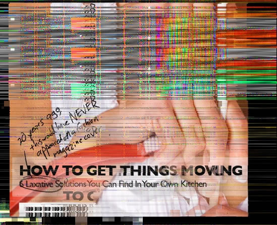

|
|
|
We’ve all heard a lot about how Parepin isn’t addictive, and how its side effec
and mostly mild. I can attest that Parepin isn’t addictive, at least in my
case, because I eliminated it from my system about two
months ago and had no adverse affects.
We’ve all heard a lot about how Parepin isn’t addictive, and how its side effects are rare
and mostly mild. I can attest that Parepin isn’t addictive, at least in my
case, because I eliminated it from my system about two
months ago and had no adverse affects.
|
|
|
One of the side effects of certain classes of antidepressants is an inability to
reach orgasm. Have you had issues of performan
about how to answer that question, then let me suggest that Parepin wilts
more than just bioterrorism.
We’ve come to accept “the twitchies.” Administration-approved comics like to
play muscle spasms for gentle laughs, and every so often we find ourselves skipping a
dinner party because a persistent facial tic would make it awkward to
converse. We
but ultim
One of the side effects of certain classes of antidepressants is an inability to
reach orgasm. Have you had issues of performance? If you even had to think
about how to answer that question, then let me suggest that Parepin wilts
more than just bioterrorism.
We’ve come to accept “the twitchies.” Administration-approved comics like to
play muscle spasms for gentle laughs, and every so often we find ourselves skipping a
dinner party because a persistent facial tic would make it awkward to
converse. We treat muscular twitches as we do hayfever or mosquito bites: an annoying
but ultimately harmless fact of life.
|
|  |
|
HOW DOES PAREPIN AFFECT
YOU?
This was not the norm before Parepin. Laxatives we
top-selling over-the-counter drug in America, either. I
have to wonder whParepin’s
long-term affect on our bodies.
Of course, most of us are not prone to getting worked up over things like this, which leads
me to my next question...
This was not the norm before Parepin. Laxatives weren’t the
top-selling over-the-counter drug in America, either. I
have to wonder what these symptoms are telling us about Parepin’s
long-term affect on our bodies.
Of course, most of us are not prone to getting worked up over things like this, which leads
me to my next question...
|
|
|
|
I was already an adult when Parepin was first introduced into the water supply. During
the last two months, since I’ve gone off Parepin, I’ve experienced a
that I hadn’t even remembered. If you’re in your thirties or older, you
might remember it.
It’s a feeling of clarity: your thoughts are clear and orde
sharpness of both sadness and joy, and you begin to have ambitions
to see more, hear more, do more. It’s not a “high,” though I do feel
than I have for years. I sure get a lot more done every day. It’s actually kind of scary,
because everything seems more important. More urgent. Problems are more
frightening. happiness is more vivid. I just feel more...present.
Most of all, my mind is working again. I’m starting to think about a lot of
the problems our country is facing, and how we got here. The Administration would tell
you I’m suffering from paraI don’t think
I’m paranoid. I just feel awake.
I was already an adult when Parepin was first introduced into the water supply. During
the last two months, since I’ve gone off Parepin, I’ve experienced a feeling
that I hadn’t even remembered. If you’re in your thirties or older, you
might remember it.
It’s a feeling of clarity: your thoughts are clear and ordered, you feel the
sharpness of both sadness and joy, and you begin to have ambitions
to see more, hear more, do more. It’s not a “high,” though I do feel more energetic
than I have for years. I sure get a lot more done every day. It’s actually kind of scary,
because everything seems more important. More urgent. Problems are more
frightening. happiness is more vivid. I just feel more...present.
Most of all, my mind is working again. I’m starting to think about a lot of
the problems our country is facing, and how we got here. The Administration would tell
you I’m suffering from paranoia, and maybe they’re right. But I don’t think
I’m paranoid. I just feel awake.
|
|